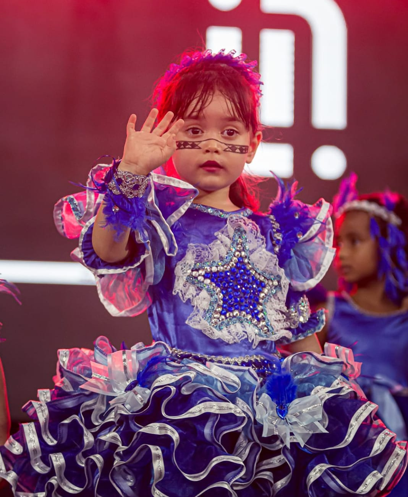
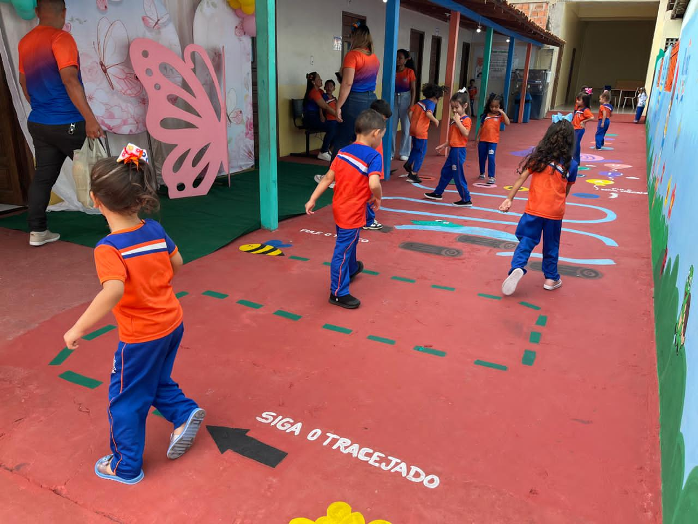
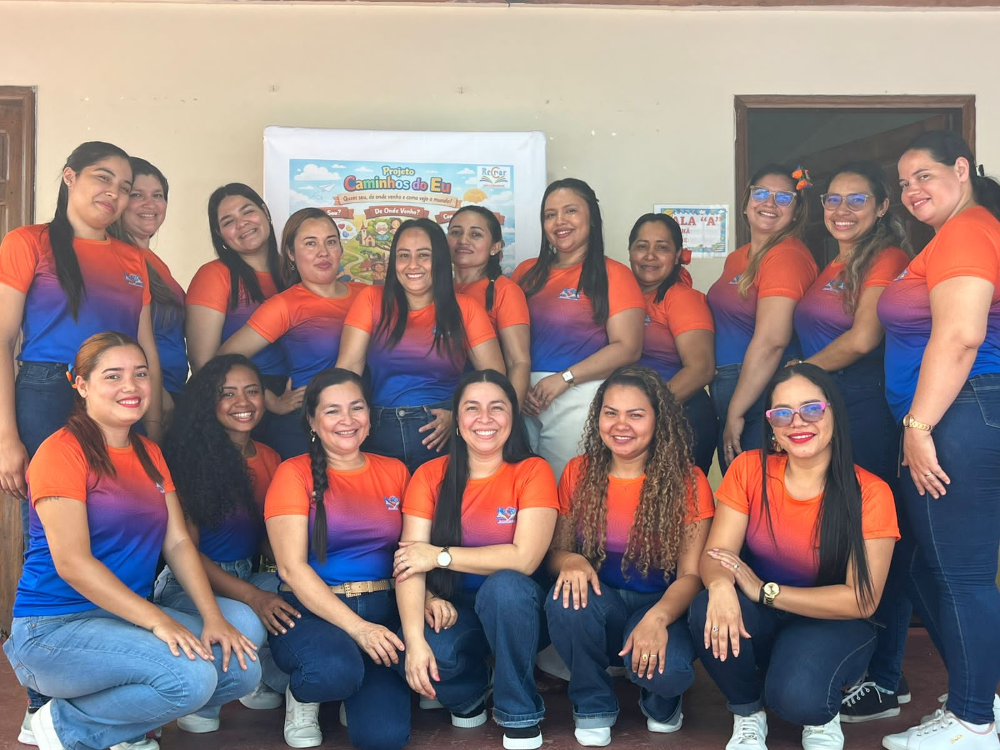

ESCOLA PARTICULAR · EDUCAÇÃO COM PRESENÇA
Compartilhando saberes e motivando sonhos.
O Recriar é uma escola pequena, no interior de Cametá. Aqui os professores conhecem cada criança pelo nome e os responsáveis sabem com quem falar quando precisam.
images/hero.jpeg

desde2022
Sobre a escola
O Recriar foi fundada em 2022, em Cametá, por uma equipe de educadoras da mesma família que queria uma escola onde as crianças fossem ouvidas e as famílias tivessem acesso fácil a quem as ensina.
Hoje a escola atende crianças da educação infantil e dos primeiros anos do Ensino Fundamental, organizadas em nove turmas. O trabalho é feito em sala, com brincadeira, leitura, escrita e conversa, respeitando o ritmo de cada idade.
O nome diz o que buscamos: criar de novo, todos os dias, uma forma de ensinar que faça sentido para a criança. Nosso lema, que está na logomarca, é compartilhando saberes e motivando sonhos.
images/escola.jpeg

O que nos diferencia
- Acompanhamento próximo
- Direção e coordenação recebem os responsáveis sem burocracia.
- Ambiente acolhedor
- Turmas de tamanho que permite à professora olhar para cada criança.
- Atividades por idade
- O que se propõe ao Infantil III não é o mesmo do 5º ano.
- Comunicação clara
- Recados, tarefas e combinados chegam às famílias de forma simples e direta.
- Espaços preparados
- Salas e áreas de convivência pensadas para o tamanho e a rotina das crianças.
Nossas turmas
As idades são aproximadas. Se tiver dúvida sobre em qual turma seu filho se encaixa, fale com a coordenação.
-
Infantil III
Cerca de 3 anos
Primeiros meses longe de casa, com rotina curta e muito acolhimento.
Foco: adaptação, autonomia, linguagem oral e coordenação motora.
-
Infantil IV
Cerca de 4 anos
A criança já conhece a escola e começa a trabalhar em grupo.
Foco: convivência, histórias, desenho, noções de número e letras.
-
Infantil V
Cerca de 5 anos
Etapa de preparação para a alfabetização, sem pressa e com brincadeira.
Foco: escrita do próprio nome, leitura de imagens, contagem e atenção.
-
Ensino Fundamental, 1º ao 5º ano
Cerca de 6 a 10 anos
Alfabetização, leitura, escrita e matemática, com acompanhamento de perto.
Foco: ler e escrever com segurança, resolver problemas e estudar com rotina.
Nossa equipe
Nomes e descrições abaixo são exemplos para a demonstração; ajuste conforme a equipe real.
-
Kelry Leão
Diretora
Coordena a escola e atende as famílias nas matrículas e nas conversas sobre a rotina das crianças.
-
Kelly Leão
Coordenadora pedagógica
Acompanha o planejamento das aulas e orienta as professoras no dia a dia.
-
Kamilly Oliveira
Secretária
Cuida de matrículas, documentos e informações para os responsáveis.
-
Kelcy Leão
Secretária
Faz o atendimento na recepção e organiza o contato entre a escola e as famílias.
images/professoras.jpeg

Nossas professoras
São treze professoras e auxiliares que trabalham com as turmas da educação infantil e do Fundamental. Planejam juntas, trocam o que funciona em sala e conversam com os responsáveis sempre que preciso.
- Maria Souza
- Angela Barros
- Terielma de Oliveira
- Daiane Valente
- Debora de Oliveira
- Irinete da Silva
- Jordana Ribeiro
- Maria Raimunda
- Mariana Silva
- Letícia Leão
- Allana Melo
- Maria Giovana
- Micaela ...
Entre em contato
Para conhecer a escola, tirar dúvidas ou falar sobre vagas, escolha o jeito mais fácil para você.
Travessa Paulo Nogueira, nº 339Bairro Matinha, Cametá, Pará
Atendimento: segunda a sexta, das 7h30 às 18h